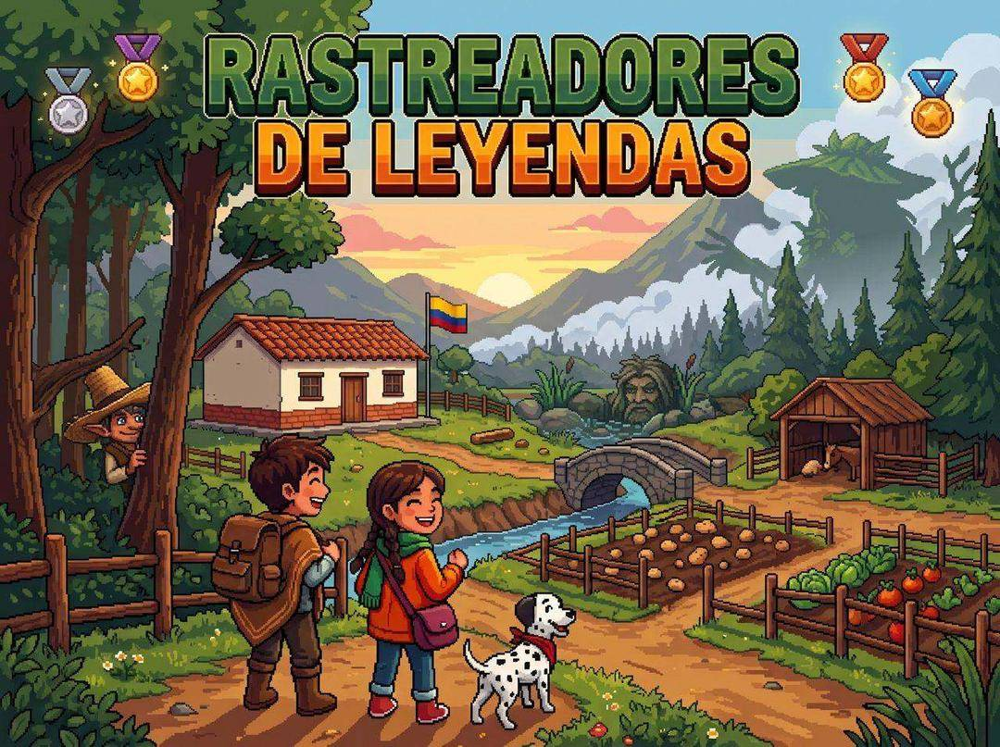

Una aventura de Comprensión Lectora y Pensamiento Computacional para 3.º de Primaria
Selecciona tu personaje:
¡Con estos 4 superpoderes podrás entender cualquier historia y resolver los misterios de San Miguel!
"Cuando una historia parece muy larga, la partimos en pedacitos pequeños: ¿quién sale en el cuento?, ¿dónde pasa? y ¿qué hace? Así es súper fácil encontrar las respuestas que están escritas en la lectura."
"A veces el cuento no dice todo con palabras, pero deja pistas escondidas. Unimos las pistas que se repiten (como la cara de susto o una tormenta) para adivinar qué sienten los personajes o por qué pasa algo."
"Cuando leemos, a veces encontramos cosas que la gente dice sin tener pruebas o por puro miedo. Limpiar errores es quitar esas ideas falsas para quedarnos solo con lo que sí es verdad."
"Después de quitar lo que sobra, nos quedamos con la enseñanza más importante de la historia y pensamos: ¿cómo nos ayuda esto a cuidar nuestra escuela, el agua y los bosques?"
Grado 3.º de Primaria • Comprensión Lectora & Pensamiento Computacional
Se certifica con alegría que el/la estudiante:
Ha explorado con éxito las 3 leyendas colombianas aplicando sus 4 superpoderes: Descomponer, Buscar Patrones, Limpiar Errores y Sacar la Idea Principal.
El Duende vive cerca de ríos y barrancos, lleva un sombrero gigante y carga una guitarra chiquita. Esconde palas y mueve ollas, pero los abuelos lo calman dejándole una guitarra afinada junto a la puerta.
Dividir el cuento en 4 preguntas cortas nos permitió encontrar fácilmente las respuestas que estaban escritas palabra por palabra.
El Mohán cuida el río y le gusta la paz. Cuando los hombres botaron basura y atraparon pececitos chiquitos, el río rugió con remolinos oscuros y los hombres huyeron temblando de miedo.
Juntamos las pistas que se repiten para descubrir que el Mohán se enojó por la contaminación y que los hombres sintieron mucho miedo.
La Madremonte camina entre los árboles cuidando el agua limpia. Limpiamos las ideas falsas de cortar los árboles y entendimos que los bosques y páramos guardan el agua de lluvia como esponjas gigantes.
Eliminamos los errores y nos quedamos con la gran enseñanza: cuidar las quebradas, amar los árboles y contarles esta lección a nuestros vecinos.
Has completado las 3 leyendas colombianas y ganado tus 3 Medallas de Honor: Ojo de Lince, Detective y Guardián del Bosque. ¡Demostraste que con tus 4 superpoderes puedes entender cualquier historia y proteger tu vereda!